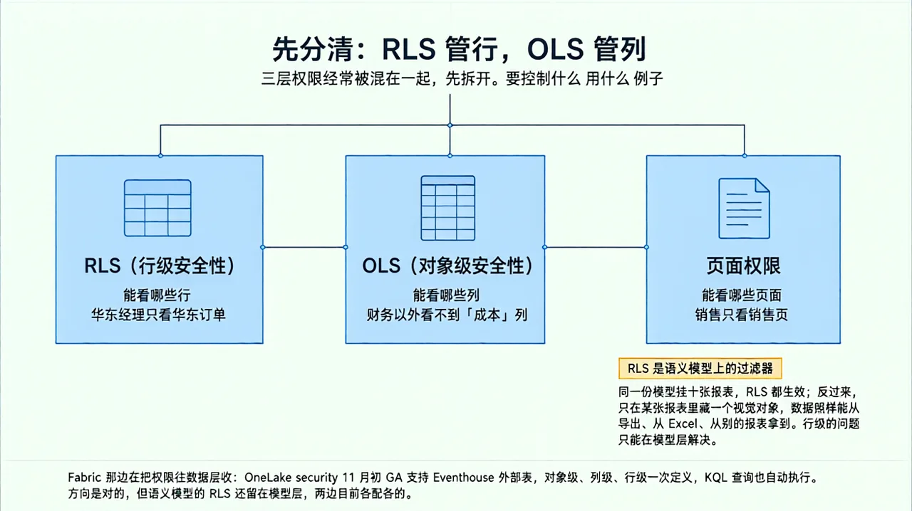
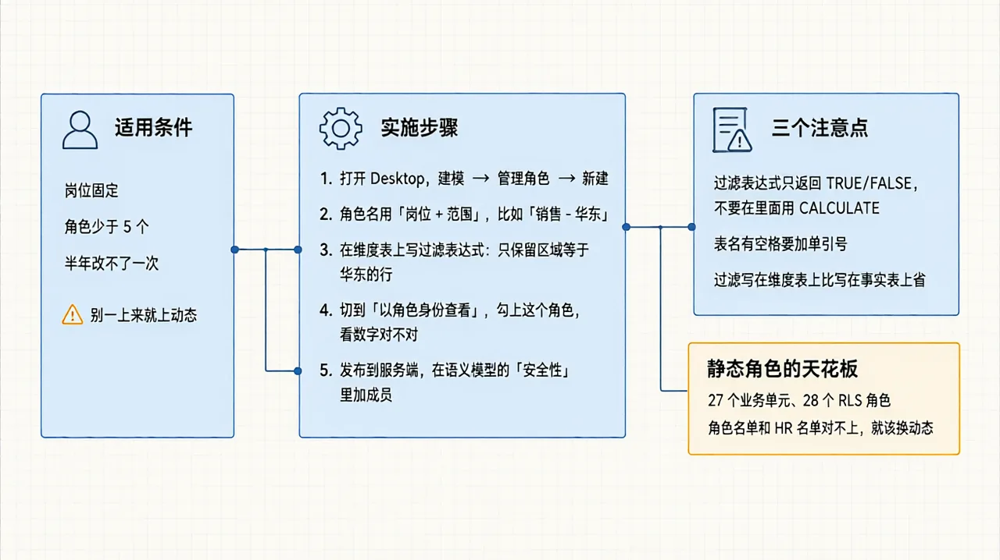
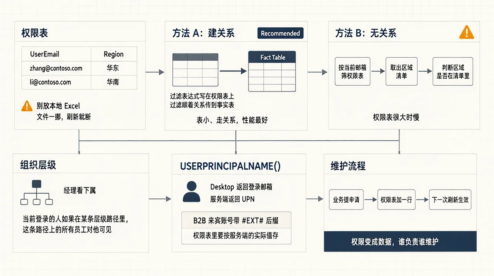
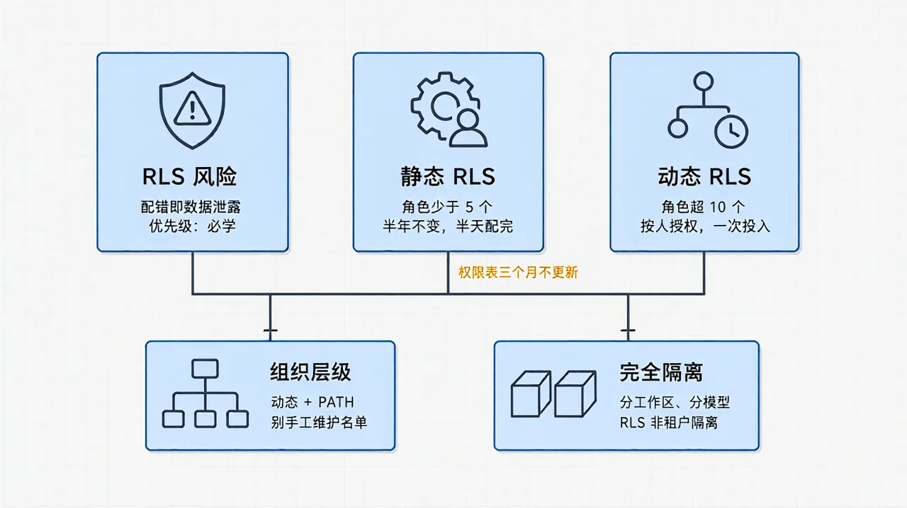

Power BI 行级权限：静态角色与动态角色两套写法
RLS 配错，泄露的不是报表，是数据。静态角色、动态角色两套写法与 6 个失效原因，一次讲清。

Power BI 配 RLS，最坏的结果不是用户看不到数据，是他看到了别人的数据。
搜「Power BI 行级权限」的人，手上多半已经有一张全公司共用的报表，现在要按岗位拆开看。这篇给两套写法——静态角色和动态角色——配可直接复制的 DAX，再列 6 个最常见的失效原因。先说结论：角色少于 5 个用静态，超过 10 个或按人授权用动态。行级的事必须在模型层解决，报表层藏不住。
一、先分清：RLS 管行，OLS 管列
三层权限经常被混在一起，先拆开。
| 要控制什么 | 用什么 | 例子 |
|---|---|---|
| 能看哪些行 | RLS（行级安全性） | 华东经理只看华东订单 |
| 能看哪些列 | OLS（对象级安全性） | 财务以外看不到「成本」列 |
| 能看哪些页面 | 页面权限、工作区 | 销售只看销售页 |
RLS 是语义模型上的过滤器。同一份模型挂十张报表，RLS 都生效；反过来，只在某张报表里藏一个视觉对象，数据照样能从导出、从 Excel、从别的报表拿到。行级的问题只能在模型层解决。
Fabric 那边在把权限往数据层收：OneLake security 11 月初 GA 支持 Eventhouse 外部表，对象级、列级、行级一次定义，KQL 查询也自动执行。方向是对的，但语义模型的 RLS 还留在模型层，两边目前各配各的。

二、静态角色：给每个岗位写一条行级权限
适用条件很明确：岗位固定、角色少于 5 个、半年改不了一次。满足就先用这个，别一上来就上动态。
- 打开 Desktop，建模 → 管理角色 → 新建。
- 角色名用「岗位 + 范围」，比如「销售-华东」。别用「角色1」。
- 在维度表上写过滤表达式：
'区域'[区域] = "华东"
只保留区域等于华东的行，其他行在这个角色下不可见。
多值：
'区域'[区域] IN {"华东", "华南"}
- 切到「以角色身份查看」，勾上这个角色，看数字对不对。
- 发布到服务端，在语义模型的「安全性」里加成员。优先加 AAD 组，别一个个加人。
三个注意点：过滤表达式只返回 TRUE/FALSE，不要在里面用 CALCULATE；表名有空格要加单引号；过滤写在维度表上比写在事实表上省，维度表行数少，先缩小再顺着关系传递。
静态角色的天花板是角色数量。我做过的一个 FinOps 看板，27 个业务单元、28 个 RLS 角色。每加一个 BU，就要改模型、重新发布、重新分成员。做到第三个月，角色名单和 HR 名单开始对不上，这个信号出现，就该换动态了。手上公开的看板在案例里，权限都是按这个思路配的。

三、动态角色：一张权限表 + USERPRINCIPALNAME()
动态 RLS 的核心是一张权限表，列两三个就够：
| UserEmail | Region |
|---|---|
| zhang@contoso.com | 华东 |
| li@contoso.com | 华南 |
权限表放数据库或 SharePoint 列表，别放本地 Excel——文件一挪，刷新就断。导入模型后可以隐藏，普通用户看不到。
方法 A：建关系（推荐）
权限表与区域维度建多对一关系，过滤表达式写在权限表上：
'权限表'[UserEmail] = USERPRINCIPALNAME()
把权限表过滤到当前登录用户那几行，过滤顺着关系传到事实表。表小、走关系，性能最好。
方法 B：无关系，用集合判断
当权限范围是拼出来的（区域 + 产品线组合），维度表不一定能直接建关系，用集合：
'区域'[区域] IN
CALCULATETABLE(
VALUES('权限表'[Region]),
'权限表'[UserEmail] = USERPRINCIPALNAME()
)
先按当前邮箱筛权限表、取出区域清单，再判断每个区域在不在清单里。两种写法结果一样。能建关系就用 A，不能建关系才用 B。B 在权限表很大时慢，因为每次查询都要算一遍集合。
经理看下属
组织层级用 PATH。先在员工表加计算列：
层级路径 = PATH('员工'[员工ID], '员工'[上级ID])
再在员工表上写 RLS 表达式：
PATHCONTAINS(
'员工'[层级路径],
LOOKUPVALUE('员工'[员工ID], '员工'[邮箱], USERPRINCIPALNAME())
)
当前登录的人如果在某条层级路径里，这条路径上的所有员工对他可见。
账号要对上
USERPRINCIPALNAME() 在 Desktop 里返回你自己的登录邮箱，在服务端返回 UPN。B2B 来宾账号会带 #EXT# 后缀。权限表里要按服务端的实际值存，否则测试通过、上线空表。
维护流程
业务提申请 → 权限表加一行 → 下一次刷新生效。不用改模型、不用重新发布。这是动态角色最大的价值：权限变成数据，谁负责谁维护。反过来，如果没人愿意维护这张表，就别上动态——权限表烂掉比角色名单烂掉更快。

四、测试：Desktop 通过不等于线上通过
「以角色身份查看」只验证表达式。成员、服务端、应用受众，三样要分开验。
排查顺序固定：
- 成员在不在角色里
- 角色挂没挂到正确的模型
- 表达式返回的对不对
- 关系通不通
- 度量值有没有清过滤器
按这个顺序走，能省掉大部分来回。
五、6 个最常见的失效原因
- 用户是工作区管理员、成员或贡献者。 这三种角色默认绕过 RLS。只给查看者，或者通过应用分发。
- 关系方向不对。 过滤写在维度表上，关系断了、方向反了，过滤传不到事实表。
- 度量值清了过滤器。 ALL、REMOVEFILTERS、CROSSFILTER 会把安全过滤一起清掉。写完度量值要在角色视图里复核。
- 账号对不上。 UPN、别名邮箱、#EXT#，三种写法有一种不一致，用户就看到空表。
- 权限表没刷新。 增量刷新只刷了事实表，权限表还是上个月的。
- 发布后没重新分配。 模型里改了角色，服务端成员不会自动同步；应用受众也要跟着更新。
常见问题
Q1：RLS 和 OLS 到底怎么选？
管行用 RLS，管列用 OLS。两者可以同时开：先按区域切行，再对敏感列设 OLS。注意 OLS 在 Desktop 里没有界面，要用 Tabular Editor 或 XMLA 端点设置。
Q2：一个人分到多个角色，看到的是并集还是交集？
并集。只要任一角色允许，这行就可见。所以角色要按「最小范围」拆，别指望用角色做减法。
Q3：导入模式、DirectQuery、实时连接，RLS 都生效吗？
都生效。导入模式和 DirectQuery 的 RLS 定义在语义模型里；实时连接到 Analysis Services 的，RLS 在源端模型上定义，Power BI 这边只是转发身份。
Q4：用户说「什么都看不到」，先查什么？
先查成员在不在角色里，再查 UPN 是否一致，最后看表达式。九成的「什么都看不到」是账号对不上或成员没加。
我的判断
RLS 是 Power BI 里少数「配错就直接变成数据事故」的功能。别的功能配错是难看，它配错是泄露。所以优先级是必学。
怎么选：
- 角色少于 5 个、半年不变：静态，半天能配完。
- 角色超过 10 个，或要按人授权：动态，一次投入，后面省事。
- 涉及组织层级：动态 + PATH，别手工维护「经理看谁」的名单。
- 只是不想让人看某几列：用 OLS，不要用 RLS 硬切行。
- 两拨人完全隔离（比如两家客户）：分工作区、分模型。RLS 不是租户隔离。
还有一个前提：动态 RLS 必须有人维护权限表。没有 Owner，就别上动态——权限表三个月不更新，比角色名单更难查。
这类改造在我们的服务里做。有具体的权限场景拿不准，把权限矩阵发过来，先帮你判断该用哪种——联系。
先画一张「谁该看哪些行」的表，再决定用哪种角色。表画不出来，说明业务规则还没定——这时候配 RLS，只是把混乱固化进模型。
